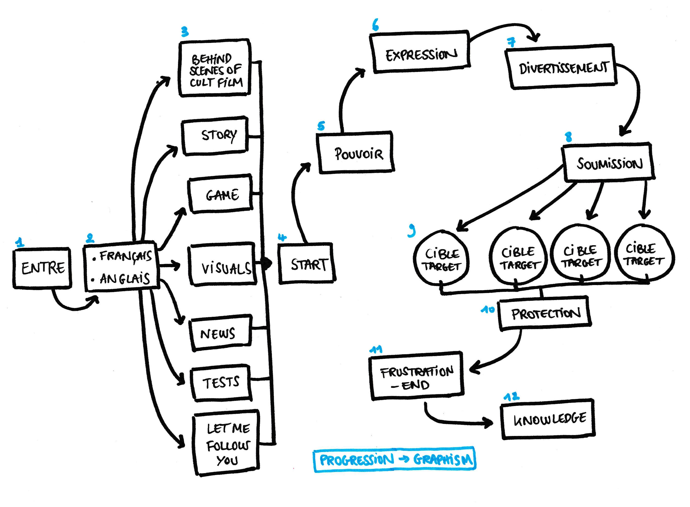
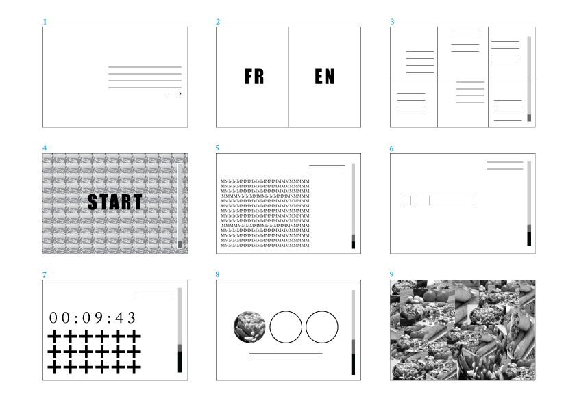
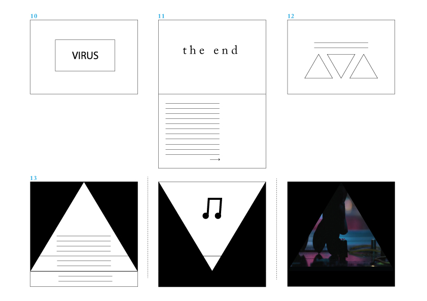

Conceptual Diagram

1.
CURIOSITY/ Entre dans le monde mystérieux de ce site web.
Tu en sortiras changé.
Enter in the mysterious world of this website.
You will exit changed.
2.
CONSTRAINT/ Choose a language : francais, english.
3.
CHOICE/ Choose a theme that attracts you the most.
4.
ACCÈS/ Start.
5.
POWER/ Find the intruder.
6.
EXPRESSION/ Create a sentence.
7.
ENTERTAINMENT/ In less than 10 seconds, change the colors of all pattern.
8.
SUBMISSION/ Select an image.
9.
TARGET/ Find the way out.
10.
PROTECTION/ Virus detected.
Quit?
11.
FRUSTRATION/ The end. (clic explanation/causes/representation.......)
12.
KNOWLEDGE/ Do you to use your last clic to know more about what can be linked to the clic?
13.
history /
art sound /
video of perfomance

